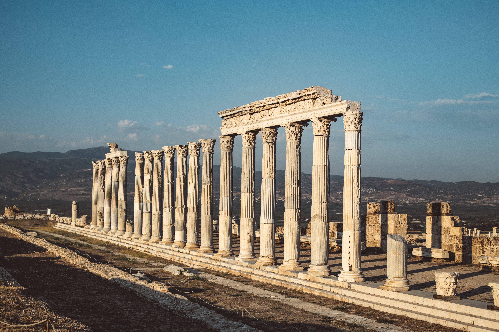

Laodicea, Turkey
Laodicea was an important ancient city located near modern-day Denizli in Turkey. Founded during the Hellenistic period, it later became a prosperous Roman city known for its trade, architecture and cultural heritage. Its archaeological remains include theatres, and temples.
